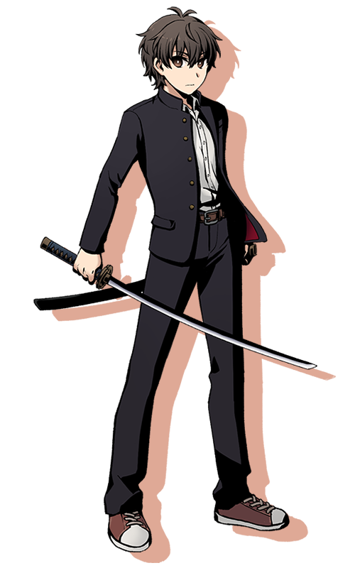

『あなたへの花』PC1
「俺は、真城がいればいい」
種族：人間 所属：D7→無所属 武装：料理・刀
性別：男 年齢：17→18 身長：175cm 誕生日：10月28日
中学生の頃に、吸血鬼によって家族を全員失った。
化け物などいるはずないと無理やり自分を納得させて生きてきたが、
ある日、吸血鬼に学校を襲われ、友人の真城朔が危機に陥ったことをきっかけに武器を取った。
狩りを続ける中で、真城朔が彼の母親を甦らせるために多くの人を手に掛けていたことを知り、
葛藤と紆余曲折の末に彼の手を取って故郷から逃亡する。
その後、恋人同士となって一年間を真城朔とともに過ごしたが、
吸血鬼グロキシニアとの戦いの中で彼を失う。
以後、失意の底で日々を送る。
武器は刀と火炎瓶と塩。
趣味は料理。
好き：真城朔
苦手：孤独
back